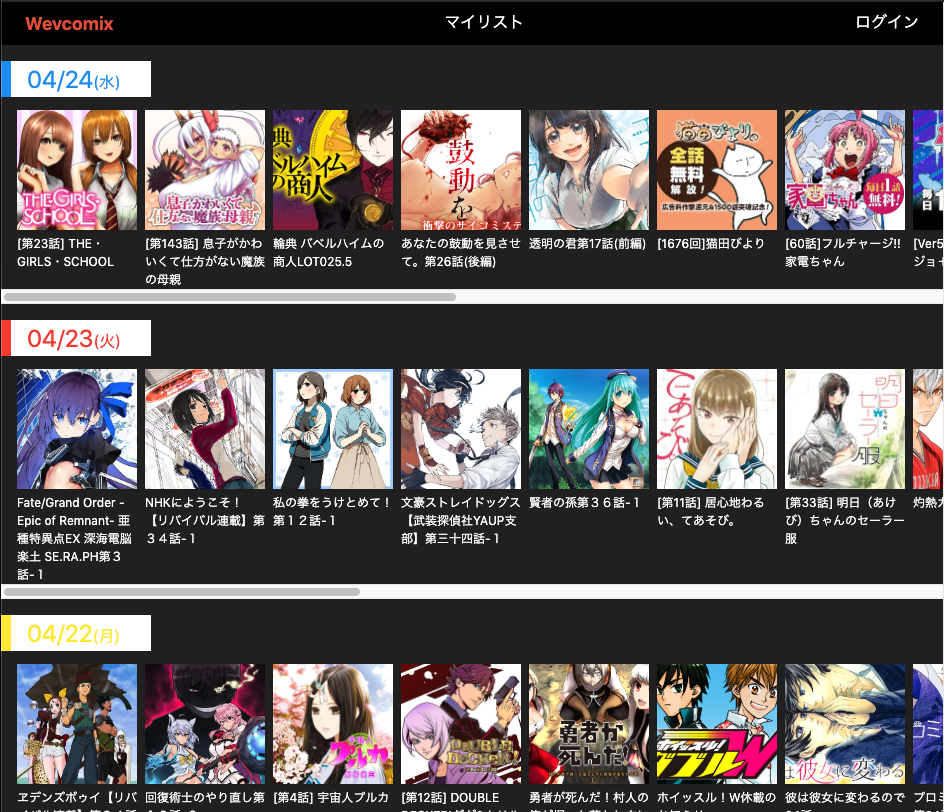
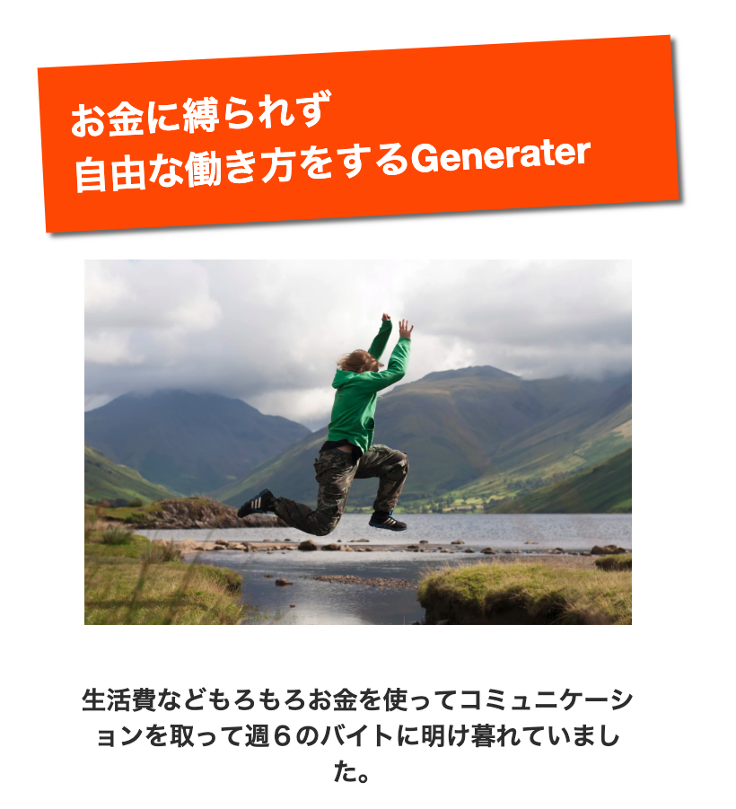
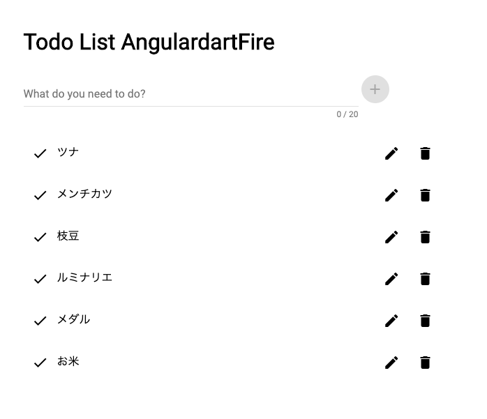
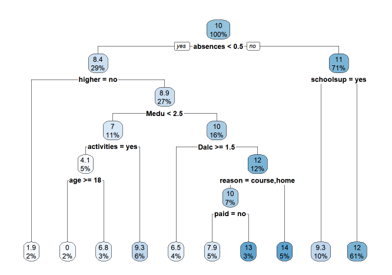

Portfolio for Ernie inc.
日竎夏輝(Hibi Natsuki)
九州大学芸術工学部芸術情報設計学部4年
GitHub
YouTube
Blog
職務経歴
2018年12月〜2019年3月 株式会社FLAPMEDIA
事業内容
アプリ開発
役職
メンバー
環境・言語
MacOS, Flutter
メディア部門の新規事業立ち上げに際して、バイトとして働く。
新規事業の先行きが不明になり事業自体が頓挫した。
開発
Wevcomix

Service
公式WEBマンガをまとめて読める
無料で読めるwebマンガはたくさんあり、各サイトをいちいちまわるのはめんどくさい。 そこで、各webマンガサイトに掲載されている作品を横スクロール式に読めるようにした。
Skill
PHP
JQuery
BootStrap
MySQL
Article
web漫画まとめサイト作成
お金に縛られずに自由な働き方をするGenerater

Service
自由に働ける文言を自動生成
お金から解放される。自由に働けるようになる。など、怪しいビジネスの勧誘をしている学生がいる。 その人たちのブログの勧誘文章を形態素解析し、マルコフ連鎖を用いて文章を自動生成する。
Skill
Python
Article
お金に縛られず自由な働き方をするGenerater
ToDoList

Service
リアルタイム共有ToDoList
Firebaseのリアルタイムデータベースを用いた。 それにより、誰かが更新すると自動的にサイトを見ている人のリストも書き換わる。
Skill
Dart
Angular Dart
Firebase
Article
リアルタイム共有ToDoリスト
ARrow
Service
バーチャルな弓矢
ARマーカーを用いることで、空間認識し弓矢を放てる。 また、的に矢を当てることもできる。
Skill
Processing
Article
ARrow
Anabar
Service
バーを検索できるアプリ
ぐるなびAPIを利用して都道府県別にバーの情報を見ることができる。
Skill
Flatter
Article
Anabar
SuperCubGo
Service
線を引いて、障害物を避けるゲーム
ただジャンプして避けるのではなく、ドラッグ&ドロップで線を引いてそれに乗る。
Skill
Sunaba
Article
SuperCubGo
Student Performance Analysis

Service
学生の成績はどの要素に影響されているのか？
学生にとって成績は気になるものである。では、どうすればいい成績が取れるのか？
Skill
R Markdown
Article
Student Performance Analysis